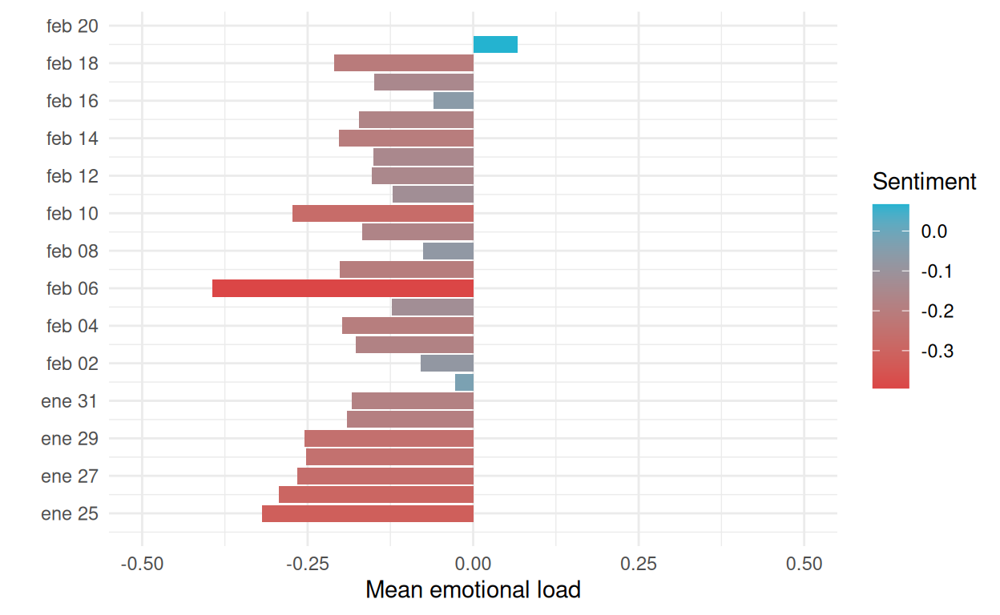
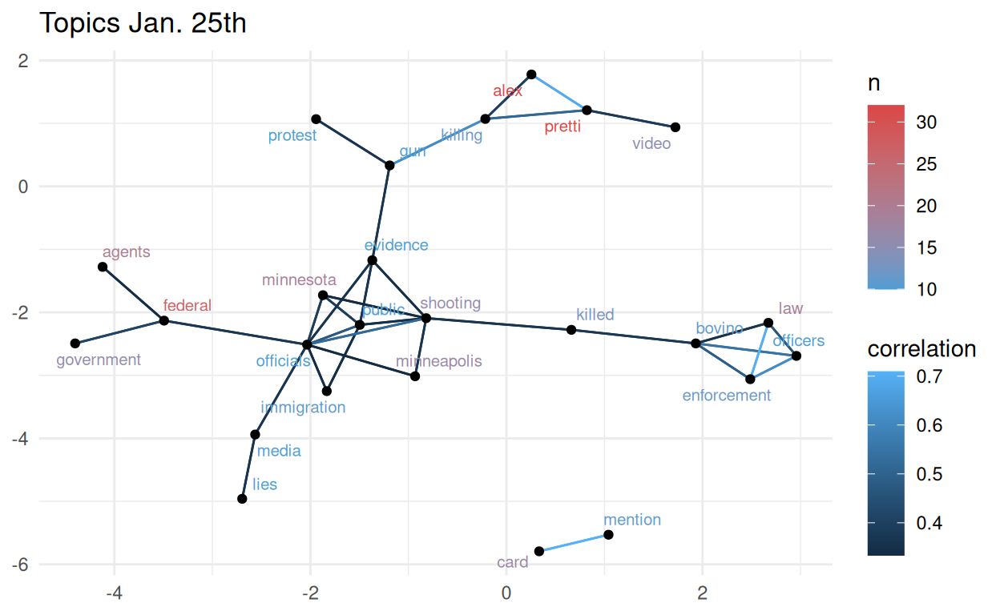
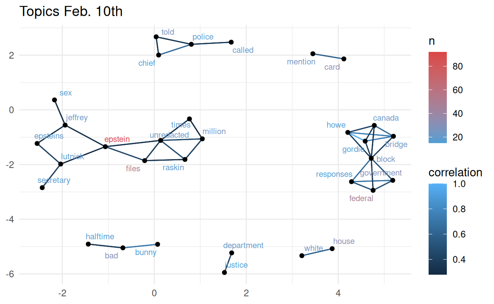
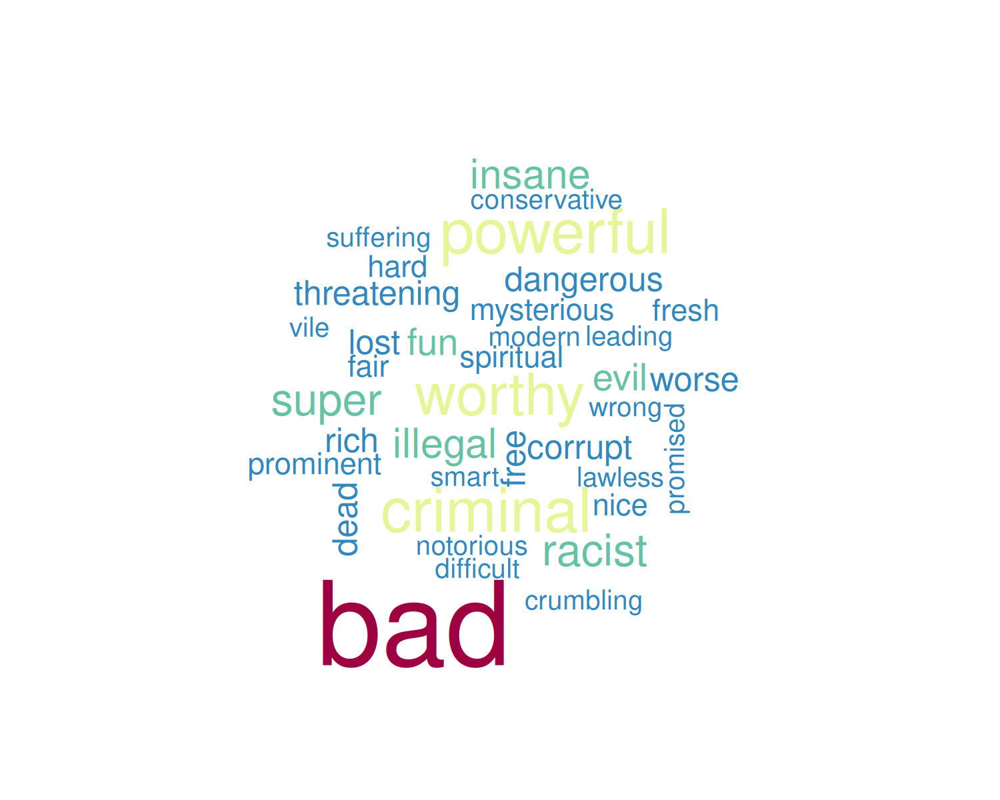
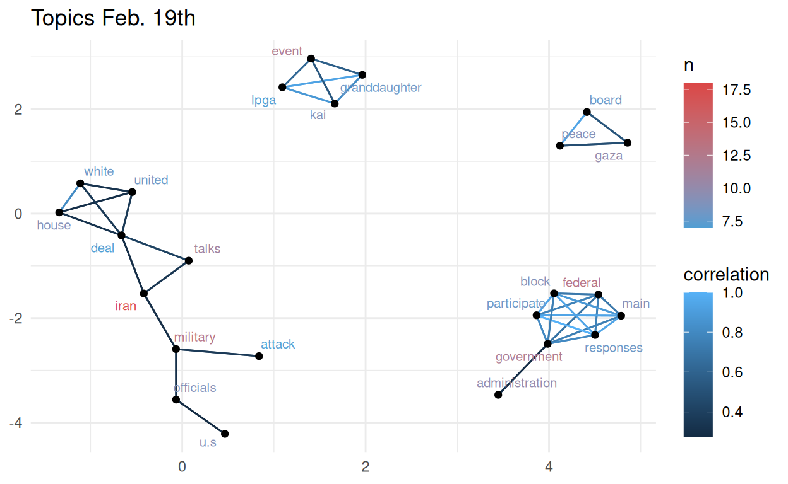

🐢 ¡Cuéntamelo otra vez, pero despacito!
En nuestro post anterior, “¡Cuéntamelo todo, pero con mates!”, ya abordamos un interesante proyecto de minería de textos (si no lo has leído ya, te recomendamos que lo leas antes de explorar este post). Usando como fuente 20,000 publicaciones (llamados toots) de la red social descentralizada Mastodon (mastodon.social) fechadas entre el 25 de enero y 19 de 2026, y aplicando distintas técnicas de minería de textos, pudimos identificar y validar una serie de temas de discusión relacionados con Donald Trump (hashtag #Trump). A través de análisis de redes, nubes de palabras y algoritmos de agrupación, pudimos, además, explorar las respuestas emocionales asociadas a distintos eventos.
En esta ocasión, utilizando la misma fuente de datos, analizamos las publicaciones a lo largo del tiempo para identificar fechas con una fuerte respuesta emocional y asociarlas a temas de discusión específicos.
🧰 Las herramientas de trabajo
En nuestro post anterior explicamos el proceso de limpieza de los datos y su transformación en unidades de análisis, llamadas tokens (en nuestro caso, 1 token = 1 palabra), antes de poder aplicar técnicas de minería de datos.
Para este post basta recordar que nuestros datos ya procesados son la lista de palabras únicas que corresponde a cada uno de los toot, una vez que las palabras “vacías” (palabras sin significado como artículos, pronombres, preposiciones, etc.; “stop words” en inglés) fueron eliminadas.
También usamos como herramientas los diccionarios de sentimientos Bing y NRC para la lengua inglesa. El diccionario Bing categoriza las palabras de forma binaria en positivas y negativas y contiene un total de 6783 palabras etiquetadas. El diccionario NRC, además de clasificar las palabras como positivas o negativas, las asocia con ocho emociones básicas según Plutchik (ira, miedo, anticipación, confianza, sorpresa, tristeza, alegría y asco), con un total de 6453 palabras etiquetadas.
Al igual que en el post anterior, para explorar mejor las emociones contenidas dentro del conjunto de toots, aplicamos un filtro ara recuperar únicamente aquellos tokens que corresponden a adjetivos, ya que esta categoría de palabras tiene mayor contenido emocional (al menos en la lengua inglesa y posiblemente en Español también). La lista de adjetivos que usamos para recuperar específicamente los adjetivos contenidos en nuestro conjunto de toots contiene un total de 4840 palabras; lo que nos permitió recuperar un total de 34,264 tokens, provenientes de 10,997 toots.
🗓️ Evolución de sentimientos a lo largo del tiempo
Para evaluar la evolución de respuestas emocionales contenidas en los toots a lo largo del tiempo, usamos el diccionario Bing. Etiquetamos todos los adjetivos dentro de nuestro conjunto de toots como “positivos” o “negativos”, asignando el valor de +1 a cada uno de los calificativos “positivos” y un valor de -1 a los “negativos”. De esta manera, podemos calcular la media de la carga emocional polarizada de un determinado conjunto de toots. De los 34,264 tokens correspondientes correspondientes a adjetivos, pudimos etiquetar 6,492 como negativos (18.9% del total) y 4,393 como positivos (12.8% del total) la media de la carga emocional fue de -0.192 para todo el conjunto de toots.
A continuación, creamos un conjunto de toots para cada día, partiendo de la fecha de publicación. La Figura 1 muestra el valor medio de la carga emocional contenida en cada conjunto de toots.

Figura 1. Análisis de la carga emocional polarizada de los toots publicados cada día entre el 25 de enero y el 19 de febrero de 2026, con la etiqueta #Trump. Cada uno de los adjetivos contenidos en el conjunto total de toots fué etiquetado como “positivo” o “negativo” de acuerdo al diccionario de sentimientos Bing. A los calificativos positivos se les asignó el valor de +1 y a los negativos -1; posteriormente se calculó la media para cada día (Mean emotional load). El color de las barras corresponde al valor de la carga emocional; los valores negativos tienden al rojo y los positivos al azul.
La Figura 1 muestra que, excepto por el 19 de febrero, la carga emocional contenida en los toots fue negativa. Destacan el 25 de enero y el 6 y 10 de febrero como las fechas con la carga emocional más negativa, así como el 19 de febrero como el único día con una carga emocional positiva.
📆 Analizar la carga emocional asociada a los toots a lo largo del tiempo nos ha permitido identificar respuestas emocionales intensas, positivas o negativas, en fechas concretas… Pero… ¿podemos asociar esas respuestas emocionales a eventos concretos?…
Al igual que en nuestro post anterior, utilizamos un análisis de redes para identificar los temas de discusión asociados a estas respuestas emocionales, utilizando la librería igraph de R. En nuestro caso, cada red se construye a partir de los niveles de correlación de los tokens dentro de cada toot; es decir, las palabras que aparecen juntas en muchos documentos tendrán un mayor grado de correlación que las palabras que aparecen juntas únicamente en unos cuantos. Así, construimos redes de palabras para aquellos días en los que identificamos respuestas emocionales concretas; esto es, puntos máximos o mínimos en los valores de carga emocional polarizada a lo largo del tiempo.
Enero 25
La Figura 1 muestra el segundo valor más bajo de carga emocional polarizada (-0.318) precisamente el día que comienza nuestro análisis, el 25 de enero. El número de toots recuperados en esta fecha es de 251, con un total de 5,269 tokens. La Figura 2 muestra los temas de discusión del 25 de enero, identificados a través del análisis de redes. Para encontrar un balance entre el número de nodos (palabras) y la claridad de las relaciones entre ellos, a través de ensayo y error, ajustamos el número mínimo de repeticiones a 10 repeticiones y el nivel de correlación a 0.35. Es decir, ajustamos nuestros parámetros para identificar palabras que aparezcan en al menos 10 toots con un nivel de correlación de 0.35.

Figura 2. Identificación de temas de discusión (topics) por análisis correlación de palabras por redes, utilizando únicamente los toots publicados el 25 de enero (Jan. 25th) de 2026, con la etiqueta #Trump. Cada punto corresponde a una palabra. La distancia entre puntos (en unidades arbitrarias) se corresponde con el grado de correlación entre palabras o grupos de palabras. El color de las palabras so corresponde con número de veces que aparecen en el conjunto de toots. El color de las líneas se corresponde con el grado de correlación entre las palabras.
El tema de discusión que emerge claramente en la Figura 2 incluye las palabras más frecuentes, “alex” y “pretti”. Una búsquede sencilla en Internet usando estos dos términos revela que el tema de discusión es el asesinato de Alex Pretti por parte de agentes de ICE (Immigration and Customs Enforcement, ICE) en Minnesota, ocurrido el 24 de enero.
Además de las palabras “killing” (asesinato), “alex”, “pretti”, aparecen las palabras “video” y “evidence”, lo que probablemente hace referencia a la evidencia en vídeo del uso de violencia letal no justificada por parte de los agentes de ICE.
También encontramos la palabra “protests” dentro de la red, que posiblemente hace referencia a la serie de protestas que tuvieron lugar el 25 de enero como respuesta a este evento.
Aparece además la palabra “bovino”, que muy probablemente hace referencia a Greg Bovino, jefe de la patrulla fronteriza de Estados Unidos, quien calificó a los agentes de ICE que abatieron a tiros a Alex Pretti como las “víctimas” del evento, sin que pudiera aportar pruebas de que Alex Pretti tuviera intenciones de hacer daño o matar a los agentes.
También podemos visualizar la cara emocional de los toots publicados en esta fecha, creando una nube de palabras con los adjetivos contenidos en cada toot (Figura 3).

Figura 3. Nube de adjetivos contenidos en las publicaciones de Mastodon (mastodon.social) del 25 de enero de 2026, con la etiqueta #Trump. El tamaño de las palabras se corresponde con la frecuencia con la que aparecen en el conjunto de publicaciones.
A pesar de la subjetividad asociada a la interpretación de cualquier hecho que tenga un componente emocional, podemos afirmar que los calificativos usados para hablar de los hechos relacionados con el asesinato de Alex Pretti se corresponden con la naturaleza de los propios hechos.
📆 Partiendo de la respuesta emocional negativa observada el 25 de enero, hemos podido identificar temas de discusión específicos, validarlos a través de sencillas búsquedas de información en Internet y complementarlos con una nube de palabras que refleja claramente la respuesta emocional asociada a estos temas…. ¡No está nada mal!…
Febrero 6
La Figura 2 señala el 06 de febrero como el día con el valor más bajo de carga emocional polarizada (-0.394). El número de toots recuperados para esta fecha fue de 737, con un total de 13,098 tokens. La Figura 4 muestra los temas de discusión del 6 de febrero, identificados a través del análisis de redes. Esta vez, ajustamos el número mínimo de repeticiones a 15 y el nivel de correlación a 0.35.

Figura 4. Identificación de temas de discusión (topics) por análisis correlación de palabras por redes, utilizando únicamente los toots publicados el 6 de febrero (Feb. 6th) de 2026, con la etiqueta #Trump. Cada punto corresponde a una palabra. La distancia entre puntos (en unidades arbitrarias) se corresponde con el grado de correlación entre palabras o grupos de palabras. El color de las palabras se corresponde con el número de veces que aparecen en el conjunto de toots. El color de las líneas se corresponde con el grado de correlación entre las palabras.
El tema de discusión principal que emerge en la Figura 4 incluye las 3 palabras palabras más comunes dentro del conjunto de toots: “video”, “obamas”, “racist”. Tras una sencilla búsqueda en Internet usando estos términos encontramos información sobre la publicación de un vídeo publicado en las redes sociales de Donald Trump en donde el expresidente americano Barak Obama y su esposa, ambos afroamericanos, aparecían retratados como simios.
En la Figura 4 también aparece un conjunto de nodos independiente que incluye las palabras “granddaugther”, “kai”, “lpga”, “event” y “worthy”. Este tema de discusión hace referencia la nieta de Donald Trump, Kai Trump y su participación en la liga femenina de golf profesional, que se anunció precisamente en esta fecha y que, más que un tema de discusión, es un artefacto generado por la repetición sostenida de un mismo toot (ver el análisis completo en nuestro post anterior).
También podemos visualizar la cara emocional de los toots publicados el 6 de febrero, creando una nube de palabras con los adjetivos contenidos en cada toot (Figura 5).

Figura 5. Nube de adjetivos contenidos en las publicaciones de Mastodon (mastodon.social) del 6 de febrero de 2026, con la etiqueta #Trump. El tamaño de las palabras se corresponde con la frecuencia con la que aparecen en el conjunto de publicaciones.
La Figura 5 muestra una nube de palabras dominada por el calificativo “racist”, lo que sugiere una respuesta emocional coherente con contenido del controvertido vídeo publicado en esta fecha en las redes sociales de Donald Trump.
📆 Al igual que con el 25 de enero, la intensa respuesta emocional negativa observada el 6 de febrero nos permitió identificar y validar un tema de discusión específico, y complementarlo con una nube de palabras que refleja claramente la respuesta emocional asociada a este evento.
Febrero 10
En la Figura 2 también podemos observar otra caída de la carga emocional polarizada el 10 de febrero (-0.272). El número de toots recuperados para esta fecha fue de 644, con un total de 10,988 tokens. La Figura 6 muestra los temas de discusión del 10 de febrero, identificados a través del análisis de redes. Esta vez, ajustamos el número mínimo de repeticiones a 15 y el nivel de correlación a 0.27.

Figura 6. Identificación de temas de discusión (topics) por análisis correlación de palabras (tokens) por redes, utilizando únicamente los toots publicados el 10 de febrero (Feb. 10th) de 2026, con la etiqueta #Trump. Cada punto corresponde a una palabra. La distancia entre puntos (en unidades arbitrarias) se corresponde con el grado de correlación entre palabras o grupos de palabras. El color de las palabras se corresponde con el número de veces que aparecen en el conjunto de toots. El color de las líneas se corresponde con el grado de correlación entre las palabras.
En esta fecha, identificamos distintos grupos de palabras. El grupo que contiene las palabras más comunes, “epstein” y “files” (documentos), hace referencia a la red de pedofilia y prostitución de Jeffrey Epstein. El 10 de febrero se levantó la censura de algunos documentos relacionados con esta red, revelando los nombres de figuras plublicas implicadas en esta red que no habían sido revelados antes.
Otro conjunto de palabras incluye “gordie”, “howe”, “bridge”, “canada”. También en esta fecha, Donald Trump amenazó con bloquear la apertura de le puente Gordie Howe International Bridge que conecta la provincia canadiense de Ontario con el estado americano de Michigan. Aunque el puente fue construido entre los dos países, el presidente americano alegaba condiciones desventajosas para los Estados Unidos respecto a la propiedad y gestión del mismo.
Otro conjunto de palabras más pequeño está compuesto de las palabras “bad”, “bunny”, “halftime” y hace referencia a la actuación del rapero Bad Bunny en el medio tiempo de la final de fútbol americano que, supuestamente, rompió récords históricos de audiencia.
#| include: FALSE
feb10_sentsCounts <- trump_sentsAdjectives %>%
mutate(date = as_date(trump_sentsAdjectives$created_at)) %>%
filter(date == "2026-02-10") %>%
count(word, sort = TRUE) %>%
data.table::as.data.table()
set.seed(78)
png("feb10_sents.png", width=5,height=4, units='in', res=300)
par(mar = rep(0, 4))
wordcloud(words = feb10_sentsCounts$word,
freq = feb10_sentsCounts$n,scale=c(3.5,0.5),
max.words=90,
colors=rev(brewer.pal(10, "Spectral")))
Figura 7. Nube de adjetivos contenidos en las publicaciones de Mastodon (mastodon.social) del 6 de febrero de 2026, con la etiqueta #Trump. El tamaño de las palabras se corresponde con la frecuencia con la que aparecen en el conjunto de publicaciones.
La Figura 7 muestra una nube de palabras dominada por el calificativo “bad”, e incluye palabras como criminal, ilegal, poderoso (powerful), corrupto (corrupt), sufrimiento (suffering), etc. Al igual que las nubes de palabras de las fechas anteriores, la nube de palabras creada para el 10 de febrero sugiere una respuesta emocional coherente con los temas de discusión identificados.
📆 Aunque la respuesta emocional negativa observada el 10 de febrero fue de menor magnitud que la de las dos fechas anteriores, también nos permitió identificar y validar temas de discusión específicos, acompañados de una respuesta emocional coherente con ellos.
Febrero 19
El 19 de febrero fue la única fecha en donde el valor de la carga emocional polarizada alcanzó un valor positivo, aunque muy bajo (apenas 0.067). El número de toots recuperados para esta fecha fue de 192, con apenas 3,276 tokens. La Figura 8 muestra los temas de discusión del 19 de febrero, identificados a través del análisis de redes. Al igual que con los gráficos de redes anteriores, a través de ensayo y error, ajustamos el número mínimo de repeticiones a 7 repeticiones y el nivel de correlación a 0.27.

Figura 8. Identificación de temas de discusión (topics) por análisis correlación de palabras (tokens) por redes, utilizando únicamente los toots publicados el 19 de febrero (Feb. 19th) de 2026, con la etiqueta #Trump. Cada punto corresponde a una palabra. La distancia entre puntos (en unidades arbitrarias) se corresponde con el grado de correlación entre palabras o grupos de palabras. El color de las palabras se corresponde con el número de veces que aparecen en el conjunto de toots. El color de las líneas se corresponde con el grado de correlación entre las palabras.
En la Figura 8 se distinguen claramente cuatro temas de discusión; uno de ellos relacionado con Irán, otro con la nieta de Donald Trump (a quien ya hemos mencionado arriba), otro de ellos relacionado con la junta de paz en Gaza, y otro con el gobierno federal.
De acuerdo a la información recuperada de Internet, en esta fecha, el presidente americano dio un discurso en la primera reunión de la Junta de Paz en Gaza, desde donde envió un ultimátum al gobierno de Irán. Advirtió que “pasarían cosas malas“ si el gobierno de Irán no accedía a reducir significativamente su programa de armas nucleares. Esta advertencia fue lanzada al tiempo que Estados Unidos acumulaba una presencia militar masiva en la región en preparación para un ataque potencial, mismo que comenzó el 28 de febrero.

Figura 9. Nube de adjetivos contenidos en las publicaciones de Mastodon (mastodon.social) del 19 de febrero de 2026, con la etiqueta #Trump. El tamaño de las palabras se corresponde con la frecuencia con la que aparecen en el conjunto de publicaciones.
La Figura 9 muestra una nube de palabras dominada por el calificativo “worthy” (digno), mismo que, como ya mencionamos arriba, es un artefacto producto de la repetición de un mismo toot (ver el análisis completo en nuestro post anterior). La nube de palabras generada para esta fecha incluye además palabras como “authoritarian” (autoritario), “wise” (sabio), y “diplomatic” (diplomático), lo que podría sugiere una respuesta emocional positiva a la postura de Donald Trump con respecto a Irán.
📆 A pesar de que la respuesta emocional positova observada el 19 de febrero fue muy pequeña comparada con las respuestas emocionales negativas observadas en fechas anteriores, también pudimos identificar y validar temas de discusión específicos, acompañados de una respuesta emocional que parece ser coherente con ellos.
🧵 Conclusiones
En este post hemos podido comprobar, nuevamente, la efectividad de distintas técnicas de minería de textos para identificar temas de discusión específicos dentro de un conjunto masivo de publicaciones de redes sociales.
Estas técnicas nos han permitido además visualizar respuestas emocionales a lo largo del tiempo; al etiquetar como “positivos” o “negativos” los adjetivos contenidos en cada una de las publicaciones pudimos identificar respuestas emocionales en fechas concretas. El análisis de redes no spermitió identificar los temas de discusión asociados a estas respuestas emocionales.
Pudimos validar la existencia de los temas de discusión reflejados en los gráficos de redes con sencillas búsquedas de información en Internet, usando como términos de búsqueda las palabras que predominan en estos gráficos.
Las nubes de palabras nos permitieron complementar en análisis de temas los de discusión, brindándonos un reflejo de las emociones asociadas a los temas de discusión identificados, verificando la existencia de una respuesta emocional coherente con el contenido de los temas de discusión.
El código completo de este análisis está disponible en el repositorio de La Casa de Datos en Github.